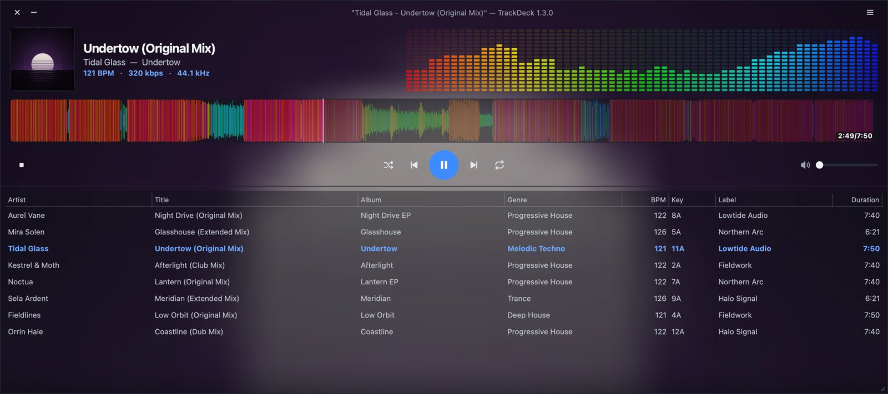
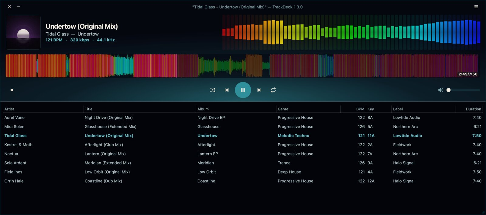
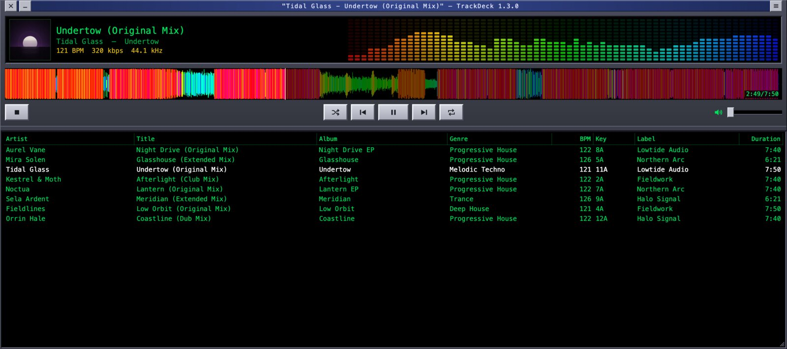
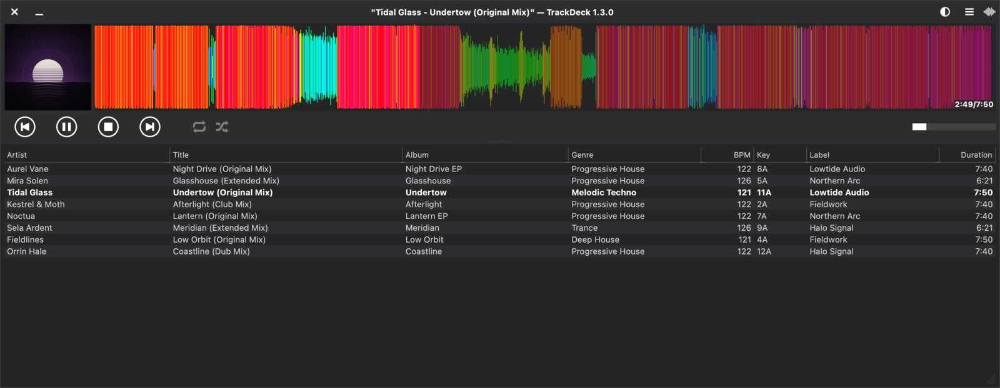
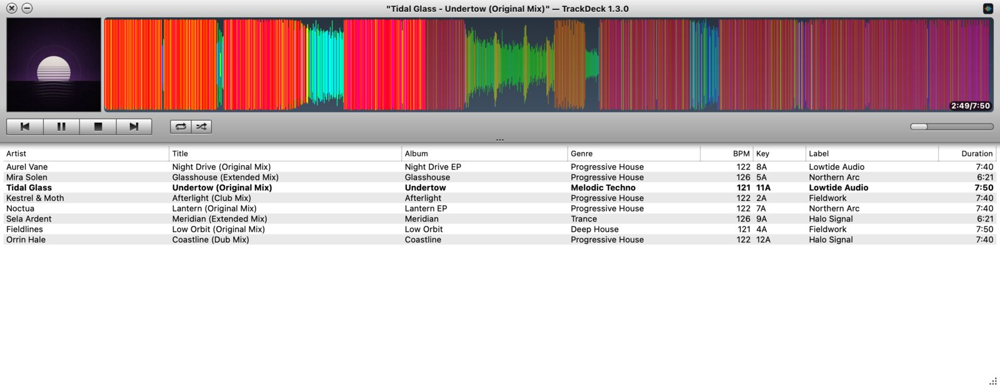
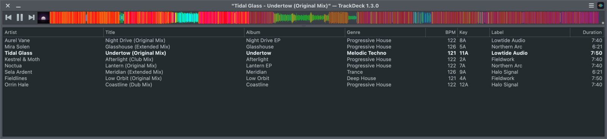

TrackDeck comes with six skins. Every one has the same features: the RGB waveform, the playlist columns, BPM and key.
Preferences → General → Skin, then restart
The default. Dark and clean, with large album art, the live visualiser across the top and a roomy playlist.

Deep night-sky navy with a teal glow rising from the horizon, after the artwork of the Khoshekh DJ mixes.

A tribute to the desktop players of the late '90s: bevelled grey panels, push-in buttons, and a black display with green text.

From Nulloy. Flat and dark, with album art next to a tall waveform and round transport buttons.

From Nulloy. A light grey look with a white playlist and small square buttons.

From Nulloy. Everything in one thin strip above the playlist, for when screen space is tight.

A skin is a zip file with the .nzs extension. Inside it are a Qt Designer layout (form.ui) with a stylesheet, a script (script.js) and the button images.
The easiest way to start is to copy one of the built-in skins from src/skins and change its colours.
retro, and give it a new name in id.txt.form.ui.yourskin.nzs and put it in TrackDeck’s skins folder.